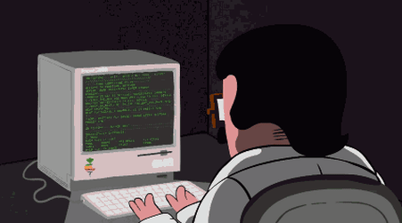

Home
About Me
Educational Background
Personal Information

© |Published 2021| Garcia, John Paul K.
Who Am I
Name:
John Paul K. Garcia
Age:
20
Gender:
Male
Address:
Bayan Park Aurora Hill
Email Address:
Garciajp48@gmail.com
© |Published 2021| Garcia, John Paul K.